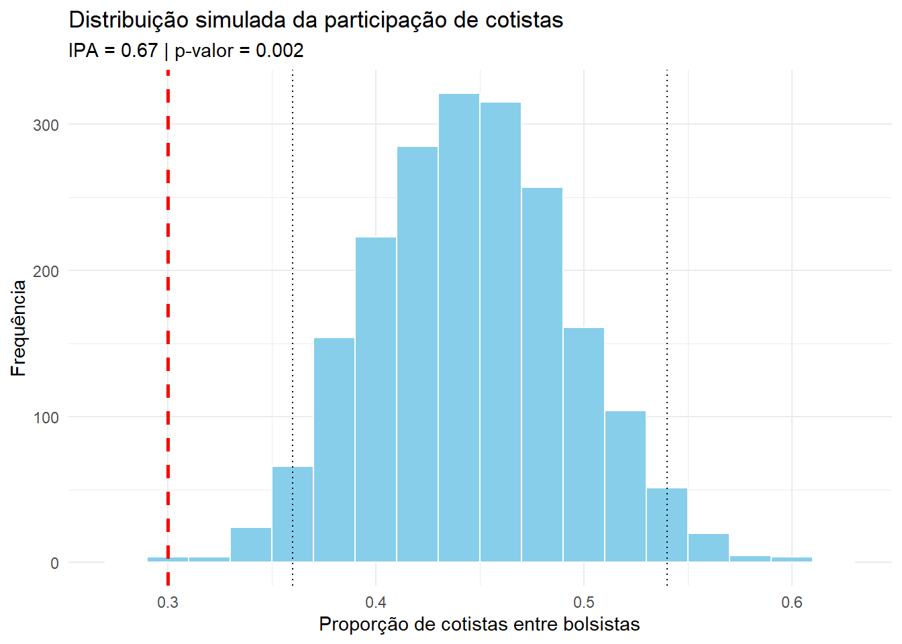

library(tidyverse)IPA
- Indicador de Participação dos cotistas da UERJ em projetos acadêmicos
# =========================================================
# ETAPA 1 — DADOS REAIS DA UNIVERSIDADE
# =========================================================
# número total de estudantes
total_estudantes <- 1000
# número total de estudantes cotistas
total_cotistas <- 450
# número total de bolsas acadêmicas
total_bolsas <- 100
# número de cotistas entre os bolsistas
cotistas_bolsistas <- 30
# =========================================================
# ETAPA 2 — CÁLCULO DAS PROPORÇÕES OBSERVADAS
# =========================================================
# proporção de cotistas na universidade
prop_cotistas_universidade <- total_cotistas / total_estudantes
# proporção de cotistas entre bolsistas
prop_cotistas_bolsistas <- cotistas_bolsistas / total_bolsas
# =========================================================
# ETAPA 3 — CÁLCULO DO IPA
# =========================================================
# IPA = participação relativa dos cotistas
# valor esperado = 1
IPA <- prop_cotistas_bolsistas / prop_cotistas_universidade
# interpretação:
#
# IPA = 1 -> participação proporcional
# IPA < 1 -> sub-representação
# IPA > 1 -> sobre-representação
# =========================================================
# ETAPA 4 — CONSTRUÇÃO DA POPULAÇÃO HIPOTÉTICA
# =========================================================
# 1 = cotista
# 0 = ampla concorrência
universidade <- c(
rep(1, total_cotistas),
rep(0, total_estudantes - total_cotistas)
)
# =========================================================
# ETAPA 5 — SIMULAÇÃO MONTE CARLO
# =========================================================
# cria espaço vazio para armazenar resultados
resultado <- numeric(2000)
# repetimos o sorteio 2000 vezes
for(i in 1:2000){
# sorteia bolsistas aleatoriamente
bolsistas <- sample(
universidade,
total_bolsas,
replace = FALSE
)
# calcula proporção de cotistas sorteados
resultado[i] <- mean(bolsistas)
}
# =========================================================
# ETAPA 6 — INTERVALO DE CONFIANÇA SIMULADO
# =========================================================
# intervalo de confiança empírico de 95%
# baseado na distribuição simulada
IC <- quantile(resultado, probs = c(0.025, 0.975))
# =========================================================
# ETAPA 7 — p-VALOR EMPÍRICO
# =========================================================
# calcula quantas simulações produziram
# proporções iguais ou menores que a observada
p_valor <- mean(resultado <= prop_cotistas_bolsistas)
p_valor[1] 0.002# interpretação:
#
# p pequeno -> resultado observado é improvável
# sob hipótese de distribuição aleatória das bolsas
# =========================================================
# ETAPA 8 — VISUALIZAÇÃO
# =========================================================
ggplot() +
# histograma da distribuição simulada
geom_histogram(
aes(x = resultado),
binwidth = 0.02,
fill = "skyblue",
color = "white"
) +
# linha da proporção observada real
geom_vline(
xintercept = prop_cotistas_bolsistas,
linetype = "dashed",
color = "red",
linewidth = 1
) +
# linhas do intervalo de confiança
geom_vline(
xintercept = IC,
linetype = "dotted",
color = "black"
) +
labs(
title = "Distribuição simulada da participação de cotistas",
subtitle = paste(
"IPA =", round(IPA, 2),
"| p-valor =", format(round(p_valor, 6), scientific = FALSE)
),
x = "Proporção de cotistas entre bolsistas",
y = "Frequência"
) +
theme_minimal()